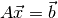
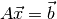

Mesh Based Variance Reduction¶
This page presents a detailed explanation of how Mesh Based Variance Reduction works, including underlying theory, any assocaited assumptions, and information about correct and appropriate use of this physics.
Descriptive Heading of Method¶
Mathematical Details, some example math syntax:
You can use LaTeX format in rst. To do inline expressions (what $expression$ would do in LaTeX) .
To have blocks of mathematical content, do this

Support is limited to a subset of LaTeX math by the conversion required for many output formats.
Assumptions¶
Any assumptions (explicit or implicit) about this method that would impact use, conclusions, validity, etc.
Additional Information¶
Details about impact of this theory on method use.
References¶
All of the justification for us listening to you.